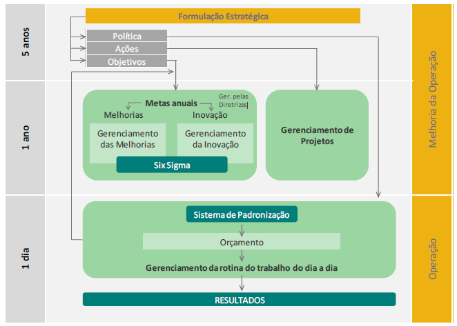
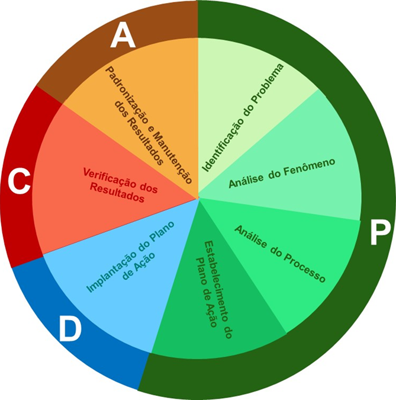
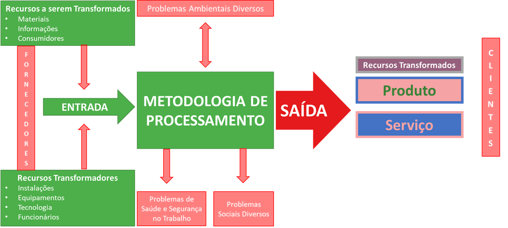

| Fases | Etapas | Atividades |
|---|---|---|
| P | Identificação do problema | Identificação das prioridades |
| Estabelecimento da meta do projeto | ||
| Quantificação dos ganhos do projeto | ||
| Análise do Fenômeno | Estratificação do problema | |
| Estudo das variações | ||
| Definição das metas específicas | ||
| Análise do Processo | Levantamento das causas potenciais | |
| Priorização das causas potenciais | ||
| Quantificação das causas priorizadas | ||
| Estabelecimento do Plano de Ação | Levantamento das possíveis soluções | |
| Priorização das possíveis soluções | ||
| Realização de teste piloto (se necessário) | ||
| Estabelecimento do plano de ação | ||
| D | Execução do Plano de Ação | Comunicação do plano de ação |
| Realização de treinamentos dos envolvidos | ||
| Implantação e acompanhamento do plano de ação | ||
| C | Verificação dos Resultados | Verificação do alcance da meta geral e das metas específicas |
| Quantificação dos ganhos do projeto | ||
| A | Padronização | Padronização das novas atividades |
| Implantação de plano para monitoramento do processo | ||
| Implantação de plano de ações corretivas |
5 O Cérebro da Operação: Método, Rotina e Controle
Dica🎯 Objetivos deste Capítulo
- Compreender a mecânica do Gerenciamento pelas Diretrizes (GPD) e os horizontes de gestão.
- Aplicar a sistemática do Hoshin Kanri e a Matriz X para o desdobramento tático de metas.
- Estruturar indicadores de desempenho utilizando o Balanced Scorecard (BSC).
- Integrar a agilidade dos OKRs ao controle rigoroso dos KPIs.
- Construir um roteiro prático de execução metodológica (PDCA/MASP).
- Entender a função da padronização (POP) e das auditorias como a “trava” do ciclo de melhoria.
No capítulo anterior, estabelecemos a estrutura diretiva da organização — da Política da Qualidade aos Objetivos — e compreendemos o motor da excelência através da Trilogia de Juran. No entanto, planejar a qualidade e definir metas é apenas metade da batalha na engenharia de produção; a outra metade, frequentemente mais desafiadora, é executar e manter o ganho ao longo do tempo.
A excelência operacional não sobrevive de esforços heroicos isolados. Sem um sistema robusto de desdobramento e sustentação, os processos tendem à entropia, as falhas retornam e o indicador de qualidade regride ao seu estado anterior. Este capítulo aborda a arquitetura gerencial necessária para garantir que a estratégia definida pela Alta Direção seja perfeitamente compreendida, executada e controlada pela linha de frente.
5.1 O Desdobramento da Estratégia (GPD e Hoshin Kanri)
Para garantir que toda a organização esteja focada em resolver os problemas corretos — lembrando sempre da Regra de Ouro da Gestão, onde problemas são desvios nos fins e não nos meios (revisite a Seção 4.4) —, o Sistema de Gestão precisa conectar a visão macro da diretoria com a execução microscópica do operador. O alinhamento entre o que a diretoria deseja e o que a operação executa é o maior desafio das organizações complexas. Para solucionar esse abismo corporativo, a engenharia de produção utiliza o Gerenciamento pelas Diretrizes (GPD).
Como define Vicente Falconi, um dos maiores especialistas no tema: > “O Gerenciamento pelas Diretrizes é uma metodologia que concentra toda a força intelectual dos colaboradores da empresa para atingir as metas da organização oriundas da Formulação Estratégica.”
A Figura 5.1 ilustra visualmente a principal vantagem do GPD. Sem diretrizes claras, os esforços e talentos da equipe apontam para direções difusas, anulando a força resultante. Com o GPD implantado, todos os vetores de força da empresa alinham-se em uma única direção, impulsionando os resultados de forma avassaladora.

A arquitetura dessa integração divide a atuação corporativa em três horizontes, conforme ilustrado na Figura 5.2:

- Horizonte de 3 a 5 anos (Formulação Estratégica): Nível da Alta Direção, focado na identidade da empresa (Visão, Missão e Valores), Políticas e Objetivos de longo prazo.
- Horizonte de 1 ano (Melhoria da Operação): Nível gerencial, onde ocorre o desdobramento do GPD através de Metas Anuais de Melhoria (via Projetos Six Sigma, DMAIC ou MASP) e Inovação.
- Horizonte de 1 dia (Operação): Nível do chão de fábrica, focado no Gerenciamento da Rotina, Sistema de Padronização (SDCA) e Orçamento para garantir os Resultados diários.
5.1.1 Hoshin Kanri: O Desdobramento em 13 Passos
Para que a visão de futuro (horizonte de 5 anos) se torne uma ação no chão de fábrica (horizonte de 1 dia), utilizamos a sistemática japonesa do Hoshin Kanri (que pode ser traduzida como “Direção e Gerenciamento”). Trata-se de um ciclo rigoroso de 13 passos que garante que a estratégia não se perca no meio do caminho:

- Determinar a situação atual.
- Determinar objetivos de longo prazo.
- Priorizar objetivos (Metas Anuais).
- Definir as iniciativas estratégicas.
- Definir as metas táticas.
- Especificar metas (Objetivo + Valor + Prazo).
- Elaborar a Matriz X.
- Definir responsabilidades.
- Estruturar o Plano A3 (documento visual de resolução de problemas).
- Implantar o Plano A3.
- Revisar o plano de curto prazo.
- Revisar o plano anualmente.
- Revisar o plano de longo prazo (3 a 5 anos).
5.1.2 Especificação de Metas e o Balanced Scorecard (BSC)
Uma meta estratégica bem construída não pode ser subjetiva. Ela deve obrigatoriamente ser SMART e conter a tríade: Objetivo + Valor + Prazo (conforme detalhado na Seção 4.4). Exemplo: Aumentar a produção de Sinter Feed em 1.500.000 toneladas até dezembro de 2024.
Para garantir que as metas não foquem apenas no lucro imediato — o que poderia destruir a sustentabilidade a longo prazo —, as organizações utilizam o Balanced Scorecard (BSC) na fase de determinação da situação atual e dos objetivos.

O BSC divide as metas em quatro perspectivas interdependentes para evitar a armadilha de focar apenas em volume (Eficácia) e destruir o orçamento (Eficiência), cuja prova matemática demonstramos através da Função ARM no Exemplo 4.6:
- Perspectiva Financeira: Foca nos resultados econômicos esperados pelos acionistas.
- Perspectiva de Clientes e Mercado: Foca na proposta de valor entregue ao consumidor.
- Perspectiva de Processos Internos: Foca na excelência da operação para garantir a entrega de valor.
- Perspectiva de Aprendizado e Inovação: Foca no desenvolvimento do capital humano e tecnológico.
A Tabela 5.1 demonstra a aplicação prática do desdobramento destas quatro perspectivas, amarrando a visão estratégica diretamente aos indicadores de controle e às iniciativas táticas em um cenário comercial.
| Objetivos | Metas | Indicadores (KPIs) | Iniciativas Táticas |
|---|---|---|---|
| Perspectiva Financeira: Melhorar o capital de giro da empresa | 30% de aumento no capital de giro | Fluxo de caixa | Diminuir o número de meses para o parcelamento do cliente. Pesquisar novos fornecedores. |
| Perspectiva do Cliente: Conquistar novos perfis de consumidores | 12% de aumento no faturamento | DRE (Demonstrativo de Resultado) | Ampliar o portfólio e mix de produtos. |
| Perspectiva Interna: Otimizar o espaço e a qualidade da exposição | Aumento de 25% do ticket médio por \(m^2\) | Ticket médio por \(m^2\) de loja | Atualizar o visual merchandising. Instalar telas interativas nos núcleos de exposição. |
| Perspectiva de Aprendizagem: Abordagem e atendimento consultivos | 100% de participação da equipe de vendas | Lista de presença e taxa de conversão | Atualização sobre tendências e treinamento em novas técnicas de venda. |
5.1.3 A Ferramenta de Amarração: A Matriz X
Quando uma organização possui dezenas de objetivos estratégicos e centenas de iniciativas táticas, o controle torna-se complexo. O Hoshin Kanri resolve essa dispersão através de uma ferramenta visual unificada: a Matriz X, apresentada na Figura 5.5.

A força da Matriz X reside na sua capacidade de correlacionar, em uma única folha A3, os quatro eixos da estratégia: 1. Norte (Sul na imagem, adequando): Estratégias de Longo Prazo (Norte Verdadeiro). 2. Oeste: Objetivos Anuais (o que atingir). 3. Norte: Iniciativas Táticas e Projetos (como atingir). 4. Leste: Métricas de Melhoria e Responsáveis (quem).
O uso da matriz força a diretoria a verificar visualmente se existe correlação forte entre o “Como” e o “O que”. Se um objetivo anual não possui iniciativas táticas conectadas (vazio na matriz de correlação), ele é uma “meta órfã”, destinada ao fracasso por falta de recursos.
5.2 OKR vs. KPI: O Equilíbrio entre Foco e Controle
Com as diretrizes desdobradas, o sistema de gestão precisa operar no dia a dia. Um erro comum é a equipe confundir os modelos de acompanhamento. Na nossa arquitetura, OKRs e KPIs funcionam como o sistema simpático e parassimpático do cérebro organizacional:
5.2.1 1. OKR (Objectives and Key Results) - O Foco na Mudança
O OKR é voltado para o que a organização deseja mudar, inovar ou acelerar. É ágil, geralmente revisado trimestralmente, e foca em resultados ambiciosos de curto prazo. * Objetivo (Qualitativo e Inspiracional): “Tornar a nossa planta de beneficiamento a mais eficiente do complexo.” * Key Result (Quantitativo e SMART): “Atingir 95% de recuperação mássica no Sinter Feed até o final do Q3.”
5.2.2 2. KPI (Key Performance Indicator) - O Controle da Saúde
O KPI é o painel de instrumentos, voltado para o que a organização precisa manter. É o termômetro. Se o KPI sai da meta, o cérebro emite um alerta para o método de solução de problemas (MASP/PDCA) agir.
| Característica | KPI (Manutenção da Operação) | OKR (Melhoria e Mudança) |
|---|---|---|
| Foco de Atuação | Saúde do processo (Controle) | Direção e Progresso (Aceleração) |
| Frequência de Análise | Diário / Mensal | Trimestral |
| Função Metodológica | Estabilizar a rotina (Ciclo SDCA) | Desafiar o Status Quo (Ciclo PDCA) |
5.3 A Anatomia de uma Meta Inteligente
Para que a arquitetura de gestão funcione, o “cérebro” (diretoria) precisa enviar ordens claras aos “braços” (operação). Uma meta mal redigida gera ruído no sistema e desperício de capital. Na engenharia da qualidade, toda meta deve seguir rigorosamente a seguinte estrutura matemática e verbal:
Meta = Verbo de Ação + Objeto + Valor (Gap) + Prazo
Veja o contraste entre uma intenção subjetiva e uma meta de engenharia:
❌ Exemplo Ruim: “Melhorar a segurança e a produtividade na mina.” (Vago, impossível de medir e sem prazo).
✅ Exemplo de Engenharia: “Reduzir [Verbo] a Taxa de Frequência de Acidentes [Objeto] para 0,5 [Valor] até dezembro de 2024 [Prazo].”
Importante🎯 O CÉREBRO NÃO ACEITA MEIOS COMO FINS
Como discutimos na Regra de Ouro da Gestão (Seção 4.4), o sistema deve focar sempre nos Resultados (Fins). Se um gestor define como meta “Comprar 5 novos caminhões fora de estrada até julho”, ele está a premiar um gasto (meio). A meta real e focada no resultado deveria ser “Aumentar a movimentação de estéril em 20% até julho”. Se a operação conseguir atingir este fim otimizando o tempo de ciclo da frota atual, a compra dos camiões (o meio) torna-se desnecessária, poupando milhões à companhia.
5.3.1 Projeções, Guidance e o Conceito de Meta
No ambiente corporativo da grande mineração (como na produção global de minério de ferro e metais básicos), o planejamento lida com três conceitos que frequentemente são confundidos pela gestão:
- A Projeção (Guidance): Constitui-se de informações que uma empresa de capital aberto oferece ao mercado como uma indicação oficial do seu desempenho futuro. Trata-se de prever o futuro com a maior precisão possível, levando em conta os dados históricos e o conhecimento de eventos futuros.
- A Meta: Se a projeção é o que provavelmente vai acontecer, a meta é o que você gostaria que acontecesse (exigindo o critério SMART).
- O Plano: Muitas vezes, as metas são definidas sem qualquer plano de como alcançá-las. O plano é justamente a resposta (o conjunto de ações operacionais e de engenharia) para garantir que as previsões correspondam aos objetivos estipulados.
5.3.1.1 O “Programado” na Prática Operacional
Para tangibilizar o “Programado” na rotina de mina, observe o exemplo de planejamento de frota. A Tabela 5.2 estabelece o número exato de caminhões fora de estrada programados e disponíveis para um período de acompanhamento.
| Período | Programado (Alvo) | Disponível (Realizado) |
|---|---|---|
| 2020-01 | 45 | 43 |
| 2020-02 | 45 | 44 |
| … | … | … |
| 2023-05 | 50 | 48 |
A função do planejamento é criar a linha do programado (os degraus do que deveria ocorrer); a função do controle é forçar o desempenho real diário a ficar o mais próximo possível dela. Acompanhar essa variação e agir sobre a lacuna é a essência do controle de qualidade.
5.4 O Caminho da Solução: PDCA e MASP
O ciclo PDCA, como uma metodologia para melhoria, é uma ferramenta simples que promove alterações graduais no processo, impulsionando assim o desenvolvimento da empresa. O ciclo, conforme apresentado na Figura 5.6, é dividido em etapas de planejamento (PLAN), execução (DO), verificação (CHECK) e ação (ACT).

Nota📌 DEFINIÇÃO NORMATIVA
De acordo com Mendes (2007), o ciclo PDCA é um método estruturado para a melhoria contínua dos processos nas organizações, dividido nas seguintes etapas:
- PLAN (Planejar): Definir a situação atual, estabelecer metas mensuráveis e estratégias para alcançá-las.
- DO (Executar): Iniciar o processo, educar/treinar os envolvidos e implementar as estratégias definidas.
- CHECK (Verificar): Analisar e comparar os resultados obtidos contra os padrões esperados (metas).
- ACT (Agir/Padronizar): Tomar ações corretivas ou padronizar a melhoria com base na verificação dos resultados.
Para que essas etapas sejam realizadas com eficácia, é essencial que as subetapas sejam definidas com precisão. É importante destacar que a etapa de planejamento (PLAN) exige o maior rigor e dedicação de tempo do projeto. A identificação e priorização das métricas proporcionarão uma investigação aprofundada das causas dos problemas, embasando as propostas de mudança em métodos estruturados.
Aviso⚠️ ARMADILHA DE ENGENHARIA
O erro mais comum em projetos de melhoria é a “Miopia de Ação”: a equipe pular a fase de Planejamento (P) e ir direto para a Execução (D). Implementar soluções baseadas em “achismos” e não em dados estratificados consome recursos financeiros da empresa e, na esmagadora maioria das vezes, ataca apenas o sintoma, permitindo que a falha real retorne no mês seguinte.
5.5 Fases e Atividades do Ciclo PDCA (MASP)
A tabela a seguir consolida a estrutura metodológica e o cronograma do projeto, servindo como a principal ferramenta de controle e auditoria das etapas — o Método de Análise e Solução de Problemas (MASP). A coluna Status é destinada ao acompanhamento qualitativo da evolução das tarefas.
5.5.1 Capítulo 5.3: Análise do Fenômeno
Nesta etapa do MASP, a engenharia precisa transformar percepção em evidência, respondendo com rigor às perguntas-chave da investigação:
- Qual o processo gerador do problema?
- Quais são as causas potenciais que mais influenciam no problema?
- As causas raízes foram identificadas?
- Quais causas foram priorizadas para estudo?
- As causas priorizadas foram comprovadas?
- Quais são as causas fundamentais a serem tratadas?
Importante🎯 PERGUNTA-CHAVE DA ETAPA
As causas priorizadas foram comprovadas?
Nota📊 PROVA REQUERIDA
Comparativo de Etapas — Focos vs. Resto da Fábrica.
A comprovação deve demonstrar, com base em dados estratificados, se os focos críticos/crônicos realmente explicam a maior parcela do desvio frente ao restante da operação.
5.5.2 O Paralelo: O Mapa de Juran e a Modelagem Analítica
Embora a Trilogia de Juran tenha sido formulada no século XX, seu roteiro original de “Planejamento da Qualidade” (composto por 9 passos) continua sendo o alicerce da engenharia de processos. A grande diferença contemporânea é a capacidade de quantificar matematicamente etapas que antes eram apenas conceituais.
No Capítulo 2 desta obra, detalhamos a Modelagem Analítica de Requisitos (ARM). Aquela estrutura matemática é, na prática, a execução rigorosa e moderna dos passos clássicos de Juran.
A Tabela 5.4 demonstra como a teoria de Juran se conecta com as ferramentas de modelagem que construímos anteriormente:
| Passos | O Mapa de Juran (Teoria Clássica) | A Modelagem Analítica (ARM - Cap 2) |
|---|---|---|
| 1 e 2 | Identificar os clientes (internos/externos) e determinar suas necessidades reais. | Levantamento exploratório das variáveis (Abordagem Bottom-up ou Top-down). |
| 3 | Traduzir as necessidades para a linguagem técnica da empresa. | Consolidação das variáveis soltas ($V_i$) em grandes Dimensões de Gestão ($D_j$). |
| 4 e 5 | Desenvolver o produto e otimizar suas características. | Cálculo do ARM, utilizando matrizes (ex: Mudge) para calibrar os pesos ($W_i$). |
| 6 e 7 | Desenvolver o processo capaz de produzir as características e otimizá-lo. | Parametrização do Desempenho ($S_i$) através de Funções de Valor e Metas SMART. |
| 8 e 9 | Provar a capacidade do processo e transferi-lo para a Operação (Controle). | Produção (Conformação) e início da Zona de Controle da Qualidade operacional. |
Essa correlação evidencia que o “Planejamento” termina quando o Passo 9 é atingido e a equipe de engenharia entrega a equação do ARM parametrizada para o chão de fábrica executar. Neste momento, o processo entra na Zona de Controle.
É apenas quando a Qualidade de Conformação falha e o controle detecta um “Pico Esporádico” que a organização é forçada a acionar a terceira perna da trilogia: a Melhoria da Qualidade, operada por meio do ciclo PDCA.
5.5.3 Análise do Fluxo Metodológico
Conforme observado na tabela executiva, o ciclo inicia-se na Identificação do Problema, onde a definição das prioridades e a meta global servem de base para as atividades seguintes. Na Análise do Fenômeno, ocorre a estratificação dos dados e o estudo das variações, permitindo que a pesquisa tome forma sobre os principais KPIs a serem utilizados.
Importante🛠️ LABORATÓRIO DE ENGENHARIA: Fase 1 (Identificação do Problema)
Mão na massa: Chegou a hora de iniciar o seu projeto aplicado. Para esta etapa, crie um documento contendo: 1. Termo de Abertura (TAP): Nome do projeto, justificativa (por que este problema afeta a operação?), objetivos SMART e restrições. 2. Matriz de Responsabilidades (RACI): Quem executa, aprova, é consultado e informado. 3. Definição do Gap: Construa um comparativo gráfico entre o Indicador Real x Planejado. O “problema” do seu projeto será a diferença métrica entre esses dois valores.
Nota💻 TECH NOTE: R & Data Science - Construindo o Gráfico de Lacuna (Waterfall)
Para materializar o Passo 3 (Definição do Gap) do Laboratório acima, a engenharia de dados utiliza gráficos de cascata (Waterfall). Eles demonstram exatamente como o indicador saiu do “Programado” e chegou ao “Realizado”, isolando o impacto de cada ofensor (Disponibilidade, Utilização e Produtividade).

O processamento e a plotagem desse Build-up em R exigem a consolidação dos dados do plano contra o realizado:
Código
# ==============================================================================
# BLOCO 2: FASE 1 - CÁLCULOS GERAIS (IDENTIFICAÇÃO DO PROBLEMA)
# ==============================================================================
print(">>> [FASE 1] Iniciando Cálculos Gerais...")
# ------------------------------------------------------------------------------
# 2.1. Figura 01: Build-up de Produção (Waterfall)
# ------------------------------------------------------------------------------
# 1. Realizado
fig01_buildup_calculate_kpi <- calculate_kpi_fleet(
data = data_drill_events_full, production_data = data_raw_requipam,
map_fleet = equipamentos, keys = NULL, by = "year"
) %>% filter(Ano == 2025)
# 2. Meta (Programado)
fig01_buildup_process_meta <- process_integrated_inputs(data_raw_requipam, "TAG", "Data") %>%
mutate(Ano = year(Dia)) %>% filter(Ano == 2025)
# 3. Delta e Plotagem
fig01_buildup_calculate_production <- calculate_production_buildup(fig01_buildup_calculate_kpi, fig01_buildup_process_meta)
fig01_buildup_process_data <- process_data_waterfall(fig01_buildup_calculate_production$Valor)
fig01_buildup <- plot_waterfall_tdm(fig01_buildup_process_data)
print(fig01_buildup)
# Saída de Dados (Tibble):
# A tibble: 5 × 7
# desc amount id type start end pos
# <fct> <dbl> <int> <chr> <dbl> <dbl> <dbl>
# 1 Programado 1297282. 1 net 0 1297282. 1297282.
# 2 Disponibilidade -2926. 2 out 1297282. 1294356. 1297282.
# 3 Utilização -19907. 3 out 1294356. 1274449. 1294356.
# 4 Produtividade 182172. 4 in 1274449. 1456621 1456621.
# 5 Realizado 1456621 5 per 0 1456621 1456621.5.5.4 O Mapeamento de Fronteiras: O Sistema de Produção e a Matriz SIPOC
Antes de mergulhar nas causas de um problema usando o Pareto ou o Ishikawa, a equipe de engenharia precisa garantir que todos compreendam o fluxo macro do processo e as suas fronteiras. O maior erro de um projeto de melhoria é a equipe não saber onde o processo começa e onde ele termina, correndo o risco de tentar “abraçar o mundo”.
Para delimitar esse escopo, utilizamos a visão clássica do Sistema de Produção. Conforme ilustrado na Figura 5.8, todo processo é um conjunto de atividades estruturadas que recebem entradas, aplicam uma metodologia de transformação utilizando recursos (pessoas, instalações, tecnologia) e geram saídas (produtos ou serviços), interagindo o tempo todo com variáveis ambientais e de segurança.

No método MASP, essa visão estrutural é operacionalizada pela ferramenta SIPOC, um acrônimo que padroniza o mapeamento de qualquer processo na operação mineral:
- S (Supplier / Fornecedor): Quem fornece os insumos ou informações para o processo iniciar? (Ex: Equipe de Topografia e Planejamento de Mina).
- I (Input / Entrada): Quais são os “Recursos a serem transformados” fornecidos? (Ex: Malha de perfuração e plano de fogo).
- P (Process / Processo): Quais são as macroatividades da “Metodologia de Processamento” (limitado a 5 ou 6 passos)? (Ex: Posicionar perfuratriz \(\rightarrow\) Furar \(\rightarrow\) Carregar explosivo \(\rightarrow\) Detonar).
- O (Output / Saída): O que o processo efetivamente gera na “Saída”? (Ex: Minério desmontado com granulometria específica).
- C (Customer / Cliente): Quem recebe essa saída? (Ex: Equipe de Carregamento / Operadores de Escavadeira).
Nota💡 INSIGHT OPERACIONAL
Na mineração, construir o SIPOC resolve 50% dos conflitos entre departamentos durante a fase de planejamento de um projeto. Ele deixa claro visualmente que se a Topografia (Supplier) entregar uma malha inadequada (Input), a detonação (Process) vai gerar matacões (Output), prejudicando a produtividade da escavadeira (Customer). O SIPOC define a responsabilidade de ponta a ponta e blinda as fronteiras do seu Termo de Abertura (TAP).
5.5.5 Análise do Processo: Ishikawa, 5 Porquês e Matriz GUT
Uma vez que o Gráfico de Pareto indicou onde o problema está concentrado, a fase passa para a Análise do Processo, que visa responder por que o problema ocorre.
A ferramenta primária é o Diagrama de Ishikawa (também conhecido como Diagrama de Espinha de Peixe ou Causa e Efeito). Ele organiza o Brainstorming da equipe classificando as possíveis origens do problema em seis categorias clássicas (os 6M):
- Máquina: Falhas no equipamento ou manutenção inadequada.
- Material: Insumos fora de especificação ou peças de má qualidade.
- Mão de Obra: Falta de treinamento, desatenção ou fadiga do operador.
- Método: Procedimentos operacionais (POPs) falhos ou inexistentes.
- Medida: Erros de calibração em sensores ou indicadores mal calculados.
- Meio Ambiente: Condições externas (chuva na mina, poeira, temperatura).
Dica💡 INSIGHT OPERACIONAL
Um erro comum é preencher o Ishikawa com “Falta de…” (ex: falta de treinamento, falta de peça). A falta de algo é uma solução ausente, não uma causa. A equipe deve descrever a anomalia real (ex: “Treinamento desatualizado para o modelo 793D” ou “Peça sofreu desgaste abrasivo prematuro”).
Com o diagrama preenchido, a equipe utiliza a Matriz GUT (Gravidade, Urgência e Tendência) para pontuar as causas e priorizar qual braço do diagrama será atacado primeiro.
Finalmente, para a causa vencedora da matriz GUT, aplica-se a técnica dos 5 Porquês. A equipe deve perguntar o motivo do problema sucessivas vezes até ultrapassar os sintomas superficiais e atingir a verdadeira causa raiz (a anomalia sistêmica que, se removida, impede que o problema volte a acontecer).
Importante🛠️ LABORATÓRIO DE ENGENHARIA: Fase 3 (Análise do Processo)
Mão na massa: (Tarefa 06) 1. Ishikawa (6M): Reúna sua equipe e faça um Brainstorming para mapear as possíveis causas do problema que venceu no seu Gráfico de Pareto. 2. Priorização (GUT): Utilize a Matriz GUT para decidir, de forma técnica e fria, quais causas mapeadas no Ishikawa serão efetivamente atacadas. 3. Os 5 Porquês: Aplique a técnica para a causa prioritária. Garanta que o plano de ação não foque em sintomas, mas sim na origem do problema.
5.6 O Chão de Fábrica e Ativos
Nenhuma equação de qualidade ou modelagem estatística se sustenta na prática sem os dois pilares físicos e fundamentais da operação industrial: as pessoas e as máquinas. O Passo 10 da nossa trilha de excelência garante que, uma vez que o método de solução de problemas (MASP) tenha sido desenhado na engenharia, ele seja executado com precisão e sustentado pelas engrenagens de campo.
5.6.1 O Engajamento Humano: Círculos de Controle da Qualidade (CCQ)
Historicamente, a mineração possuía uma gestão rigidamente vertical (comando e controle), onde a engenharia pensava e a operação apenas executava. O moderno Mining Analytics prova que essa barreira é disfuncional. Quem conhece a verdadeira “dor” do processo e os pequenos desvios não reportados não é o analista sentado no escritório, mas o operador dentro da cabine da escavadeira.
Para transformar essa experiência empírica em dados técnicos, a Gestão da Qualidade utiliza os Círculos de Controle da Qualidade (CCQ).
O CCQ é um grupo voluntário de trabalhadores da mesma área que se reúne regularmente para identificar, analisar e solucionar problemas que afetam seus processos ou a qualidade do produto. A grande força dessa ferramenta é a inversão da abordagem hierárquica: a melhoria nasce de baixo para cima (Bottom-up).
Benefícios Diretos do CCQ na Mineração: * Detecção Precoce: Os operadores costumam perceber mudanças sutis de som, vibração ou temperatura nos equipamentos semanas antes de um sensor emitir um alarme catastrófico. * Soluções de Baixo Custo: Por estarem na linha de frente, as soluções propostas pelos círculos tendem a ser adaptações mecânicas criativas e baratas, em oposição às reestruturações milionárias propostas pelas diretorias. * Mudança de Cultura: O colaborador deixa de ser um “apertador de botão” e passa a ser o dono do seu processo (sentimento de pertencimento e valorização).
Importante🛠️ LABORATÓRIO DE ENGENHARIA: Dinâmica do CCQ
Como estruturar um Círculo: 1. Treinamento Básico: Capacite os operadores da linha de frente nas 7 Ferramentas Básicas (Pareto, Ishikawa, 5 Porquês). Eles precisam falar a mesma linguagem da engenharia. 2. Tempo Dedicado: O grupo deve ter de 1 a 2 horas semanais, durante o expediente, liberadas e pagas pela empresa para debater problemas. Reuniões de CCQ fora do horário não engajam. 3. Reconhecimento: Quando uma ideia do grupo gera redução de custo ou aumento de produção, o reconhecimento deve ser público e, de preferência, acompanhado de incentivos financeiros atrelados ao ganho.
5.6.2 A Confiabilidade Física: Gestão e Manutenção de Ativos
Se o ser humano engajado é a inteligência do chão de fábrica, o equipamento é a força bruta que garante o resultado quantitativo do MASP. A mineração é a indústria do maquinário pesado. Caminhões fora de estrada, perfuratrizes gigantescas e moinhos industriais operam em regimes de trabalho extenuantes (24 horas por dia, sujeitos a poeira, umidade e altíssimo torque).
A melhoria da qualidade na mineração é indissociável da Gestão de Manutenção. Um indicador de qualidade cai imediatamente quando a máquina entra em falha. A evolução da confiabilidade na gestão divide a manutenção em quatro grandes estratégias:
- Manutenção Corretiva (Reativa): É o modelo mais caro e perigoso. Ocorre apenas quando o equipamento quebra. Gera lucro zero, para a produção de forma não programada e oferece grandes riscos à segurança dos operadores.
- Manutenção Preventiva (Baseada no Tempo): É a manutenção estipulada pelo manual do fabricante (ex: trocar o óleo a cada 500 horas de motor). Melhora a segurança, mas muitas vezes troca-se uma peça que ainda possuía vida útil, encarecendo a operação.
- Manutenção Preditiva (Baseada na Condição): Aqui a ciência de dados e a engenharia da qualidade começam a brilhar. Ao invés de trocar a peça por tempo, a engenharia monitora os sinais vitais do equipamento (ex: termografia de painéis elétricos, análise química do óleo, sensores de vibração de rolamentos). A peça só é trocada quando o sensor prevê a falha iminente.
- Manutenção Prescritiva (Analytics/Machine Learning): O estado da arte. Utiliza Inteligência Artificial e modelos matemáticos para cruzar dados históricos de operação e desgaste. O algoritmo prescreve não apenas quando a máquina vai falhar, mas ajusta os parâmetros de operação autonomamente para esticar a vida útil (Ex: “Abaixe o limite de RPM na subida de rampa para o caminhão não fundir o motor até a próxima parada de oficina programada”).
Nota💡 INSIGHT OPERACIONAL: A Guerra entre Produção e Manutenção
Um dos maiores gargalos organizacionais da mineração é o conflito de interesses entre a área de Operação (que é cobrada para bater a meta de volume de toneladas) e a área de Manutenção (que é cobrada para parar a máquina e realizar preventivas). Sem a aplicação da Metodologia ARM para equilibrar os pesos (\(W_i\)) dessas áreas, a Operação “passa por cima” do plano de manutenção, gerando faturamento de curto prazo e destruição do equipamento a longo prazo.
5.7 O Roteiro de Execução: O Ciclo PDCA na Prática
Quando o Painel de Controle mostra que um KPI está fora da meta, o engenheiro não deve atuar por instinto. Ele deve acionar o Método de Análise e Solução de Problemas (MASP). Abaixo, apresentamos o guia de bolso (o “PDCA Mineral”) para a resolução implacável de anomalias operacionais no chão de fábrica.
5.7.1 FASE P (PLAN) - O Diagnóstico Cirúrgico
A fase de planejamento deve consumir 70% do tempo do projeto. Se planejar mal, executará a solução errada.
- Passo 1: Baseline, Benchmarking e a Captura da Lacuna (Gap) Definir o problema exige conhecer a diferença entre a base de desempenho atual do processo e a referência de excelência desejada.
- Cálculo do Baseline (A Base): Para calcular o desempenho atual sem ser traído por anomalias estatísticas, a engenharia utiliza a técnica da Média Aparada. Apare os dados extremos (outliers) utilizando a Amplitude Interquartílica (ex: cortando P05-P95). A praxe é aparar entre 5% e 25% da informação para manter apenas os dados representativos da rotina estabilizada.
- Benchmarking (A Referência): Defina onde o indicador deveria estar buscando a Referência do Setor (melhor média móvel), a Referência Técnica (capacidade de placa do equipamento) ou a Referência Externa (Best in Class global).
Nota💻 TECH NOTE: R & Data Science - O Método da Lacuna
A definição de uma meta SMART não nasce de um desejo subjetivo da diretoria, mas de uma análise estatística rigorosa. A Figura 5.9 ilustra o “Método da Lacuna”. O processo segue quatro passos matemáticos que extraem o quanto de melhoria a operação pode “comprar” no ciclo atual.

Para processar o cálculo da Figura 5.9 e gerar sua respectiva visualização no R, o engenheiro de dados define a linha de base e a compara com o 10º quantil da série histórica:
# ==============================================================================
# BLOCO DE CÓDIGO R: Método da Lacuna
# ==============================================================================
# 1. Definir a Referência (Benchmark) utilizando o Quantil 10
ref_q10_val <- quantile(fig19_nic_calculate_kpi$NIC, probs = 0.10)
# 2. Calcular a Lacuna (Gap total) entre a Média e a Referência
lacuna_val <- mean(fig19_nic_calculate_kpi$NIC) - ref_q10_val
# 3. Definir a agressividade da meta (Agressividade de Captura = 60%)
captura_val <- lacuna_val * 0.60
# 4. Calcular o valor final da Meta SMART
meta_val <- mean(fig19_nic_calculate_kpi$NIC) - captura_val
# ------------------------------------------------------------------------------
# Preparação de Dados e Plotagem do Gráfico
# ------------------------------------------------------------------------------
fig20_gap_process_data <- data.frame(
item = factor(c("Baseline", "Referência", "Lacuna", "Captura", "Meta"),
levels = c("Baseline", "Referência", "Lacuna", "Captura", "Meta")),
valor = c(fig19_nic_process_pars$baseline_nic[1], ref_q10_val, lacuna_val, captura_val, meta_val)
) %>% mutate(
xmin = as.numeric(item) - 0.4,
xmax = as.numeric(item) + 0.4,
ymin = c(0, 0, ref_q10_val, meta_val, 0),
ymax = c(fig19_nic_process_pars$baseline_nic[1], ref_q10_val, fig19_nic_process_pars$baseline_nic[1], fig19_nic_process_pars$baseline_nic[1], meta_val)
)
fig20_gap <- ggplot(fig20_gap_process_data) +
geom_rect(aes(xmin = xmin, xmax = xmax, ymin = ymin, ymax = ymax, fill = item), colour = "white") +
geom_text(aes(x = (xmin + xmax)/2, y = ymax + 10, label = round(abs(valor), 1)), fontface = "bold", size = 5) +
scale_fill_manual(values = cores_gap) +
scale_x_continuous(breaks = 1:5, labels = fig20_gap_process_data$item) +
theme_default + theme(legend.position = "none")
print(fig20_gap)A saída de terminal gerada pelo código comprova o avanço de um Baseline de 201.1 para uma nova Meta arrojada de 121.8:
> data_tat_gap
item xmin xmax ymin ymax valor
1 Baseline 0.6 1.4 0.0000 201.1162 201.11618
2 Referência 1.6 2.4 0.0000 69.0000 69.00000
3 Lacuna 2.6 3.4 69.0000 201.1162 -132.11618
4 Captura 3.6 4.4 121.8465 201.1162 -79.26971
5 Meta 4.6 5.4 0.0000 121.8465 121.84647
Nota💻 TECH NOTE: R & Data Science - Análise Financeira e de Produtividade
Apenas definir a meta não justifica o investimento do projeto de melhoria. A engenharia deve converter o Gap de processo (em dias, toneladas ou horas) em impacto no Ebitda. O código abaixo utiliza a base do Turn Around Time (TAT) e a cruza com margem de vendas, lucro e juros SELIC para demonstrar como o atingimento da meta converte-se em caixa para a companhia.
# ==============================================================================
# BLOCO DE CÓDIGO R: Análise Financeira do TAT
# ==============================================================================
# 1. Função Auxiliar de Data
converter_data_pt <- function(x) {
mapa <- c("Jan"="01", "Fev"="02", "Mar"="03", "Abr"="04", "Mai"="05", "Jun"="06", "Jul"="07", "Ago"="08", "Set"="09", "Out"="10", "Nov"="11", "Dez"="12")
as.Date(paste0("20", str_extract(x, "[0-9]{2}$"), "-", mapa[str_to_title(str_sub(x, 1, 3))], "-01"))
}
# 2. Dados Financeiros
data_tat_financeiros <- read_excel(path_ebitda, sheet = "Faturamento") %>%
filter(Estrutura == "Realizado") %>%
mutate(Data = map_vec(Mensal, converter_data_pt), Mês = yearmonth(Data),
Receita_Liquida = as.numeric(`RECEITA LÍQUIDA`), Margem_Venda = as.numeric(`Margem de Venda`)) %>%
select(Mês, Receita_Liquida, Margem_Venda)
# 3. Dados Selic
data_tat_selic_mensal <- tibble(
Mês = yearmonth(seq(as.Date("2024-01-01"), as.Date("2025-12-01"), by = "month")),
Selic = c(0.0097, 0.0080, 0.0083, 0.0089, 0.0083, 0.0079, 0.0091, 0.0087, 0.0084, 0.0093, 0.0079, 0.0093,
0.0101, 0.0099, 0.0096, 0.0106, 0.0114, 0.0110, 0.0128, 0.0116, 0.0122, 0.0128, 0.0105, 0.0122)
)
# 4. Cálculo de Ganhos e Setup Base
media_24 <- data_tat_financeiros %>% filter(year(Mês)==2024) %>% summarise(RL=mean(Receita_Liquida, na.rm=T), MV=mean(Margem_Venda, na.rm=T))
data_tat_calculo_ganhos <- data_tat_pivot_etapa %>%
filter(Filial == "Carajás", Período == "Durante") %>%
group_by(Mês = yearmonth(Início)) %>%
summarise(NOS = n(), TAT_Real = mean(TAT), n_concluidas = sum(status == "Concluida")) %>%
left_join(data_tat_financeiros, by = "Mês") %>% left_join(data_tat_selic_mensal, by = "Mês") %>%
mutate(
Receita_Liquida = replace_na(Receita_Liquida, media_24$RL),
Margem_Venda = replace_na(Margem_Venda, media_24$MV),
TM = Receita_Liquida / ifelse(n_concluidas>0, n_concluidas, NOS),
LU = TM * (Margem_Venda / Receita_Liquida),
dif_dias = pars$baseline - TAT_Real,
GC = dif_dias * NOS * (LU / pars$meta),
GS = (dif_dias * (TM/30)) * Selic,
IT = (GC + GS) / Receita_Liquida * 100,
Data_Plot = as.Date(Mês)
)
# 5. Projeção de Ganhos Futuros
data_tat_projecao <- tibble(Data_Plot = seq(pars$xP_in, pars$fim_proj, by = "month")) %>%
mutate(IT_Previsto = seq(from=last(data_tat_calculo_ganhos$IT), to=5.0, length.out=n()))
# 6. Plot Financeiro (Linha do Tempo)
ggplot() +
geom_hline(yintercept = 0, colour = "grey50") +
geom_line(data = data_tat_projecao, aes(x = Data_Plot, y = IT_Previsto, linetype = "Previsto"), colour = "grey60") +
geom_line(data = data_tat_calculo_ganhos, aes(x = Data_Plot, y = IT, colour = "Real"), linewidth = 0.8) +
geom_point(data = data_tat_calculo_ganhos, aes(x = Data_Plot, y = IT, fill = IT > 0), size = 3, shape = 21) +
geom_vline(xintercept = as.numeric(pars$xP_in), colour = "#1D5185", linetype = 4) +
scale_fill_manual(values = c("TRUE"="#24A379", "FALSE"="#C40E0E"), guide="none") +
theme_default + labs(title = "Impacto Financeiro na Operação")Monitoramento de Saída do Terminal: Ao cruzar a redução do TAT com a Receita Líquida e a Selic, a modelagem extrai o Ganho Comercial (GC), o Ganho de Selic (GS) e o Impacto Total (IT) ao longo da linha do tempo.
> data_tat_projecao
# A tibble: 8 × 2
Data_Plot IT_Previsto
<date> <dbl>
1 2025-05-01 19.0
2 2025-06-01 17.0
3 2025-07-01 15.0
4 2025-08-01 13.0
5 2025-09-01 11.0
6 2025-10-01 8.99
7 2025-11-01 6.99
8 2025-12-01 5
> data_tat_calculo_ganhos
# A tibble: 16 × 14
Mês NOS TAT_Real n_concluidas Receita_Liquida Margem_Venda Selic TM LU dif_dias GC GS IT Data_Plot
<mth> <int> <dbl> <int> <dbl> <dbl> <dbl> <dbl> <dbl> <dbl> <dbl> <dbl> <dbl> <date>
1 2024 jan 56 195. 56 19627029 5478107. 0.0097 350483. 97823. 6.13 275781. 695. 1.41 2024-01-01
2 2024 fev 46 192. 46 11241341. 3202001. 0.008 244377. 69609. 9.09 238993. 593. 2.13 2024-02-01
3 2024 mar 40 187. 40 17697325. 5893096. 0.0083 442433. 147327. 14.0 679101. 1719. 3.85 2024-03-01
4 2024 abr 103 257. 103 13449194. 3975587. 0.0089 130575. 38598. -55.8 -1821784. -2163. -13.6 2024-04-01
...
16 2025 abr 26 139. 26 19987272. 7395976. 0.0106 768741. 284461. 62.2 3772733. 16883. 19.0 2025-04-01- Matriz de Captura da Lacuna: Identificada a diferença total entre o Baseline e o Benchmark, e validado o seu impacto financeiro na modelagem, o gestor define quanto buscar no próximo ciclo dependendo da maturidade da equipe:
graph LR
A[Tamanho Total da Lacuna<br>Baseline vs Benchmark] --> B{Maturidade e<br>Recursos da Equipe}
B -->|Alta Maturidade<br>Dados Confiáveis + Orçamento| C(Capturar $\ge 50\%$ da Lacuna)
B -->|Maturidade Média<br>Apenas parte das condições| D(Capturar de 20% a 50%)
B -->|Maturidade Baixa<br>Estágio puramente reativo| E(Capturar de 10% a 20%)
style C fill:#2ecc71,stroke:#333,color:#fff
style D fill:#f1c40f,stroke:#333
style E fill:#e74c3c,stroke:#333,color:#fff: Matriz de Decisão para Captura da Lacuna (Gap) {#fig-matriz-captura-lacuna}
- Passo 2: Mapeamento de Fronteiras (SIPOC): Não tente “abraçar o mundo”. Defina visualmente onde o processo começa (Fornecedor/Entrada) e onde termina (Saída/Cliente). Se o problema é no britador primário, não perca tempo analisando a expedição do porto.
- Passo 3: Descoberta da Causa Raiz: Esqueça o “achismo”. Utilize dados.
- Onde está o problema? Aplique o Gráfico de Pareto.
- Por que ocorre? Reúna a equipe, faça um Brainstorming e preencha o Diagrama de Ishikawa.
- Qual atacar primeiro? Filtre as causas com a Matriz GUT e desça até a raiz com os 5 Porquês. (Nota: O passo a passo matemático para construir cada uma destas ferramentas será detalhado na nossa “Caixa de Ferramentas” no Capítulo 6).
- Passo 4: O Plano de Ação (5W2H): Para a causa raiz encontrada, defina um plano de ação estanque: O que será feito (What), Quem fará (Who), Quando (When), Onde (Where), Por que (Why), Como (How) e Quanto custará (How much).
5.7.2 FASE D (DO) - O Chão de Fábrica
O plano sai da sala de engenharia e vai para o terreno (Gemba).
- Passo 5: Execução e Treinamento: Nenhuma mudança sobrevive se o operador não a compreender. Antes de executar, a engenharia deve apresentar o plano nos Diálogos Diários de Segurança e Qualidade (DDSQ) e envolver os Círculos de Controle da Qualidade (CCQ). A operação executa o 5W2H rigorosamente como planejado.
5.7.3 FASE C (CHECK) - A Verificação Matemática
A hora da verdade. O esforço gerou resultado?
- Passo 6: Validação Estatística: Meça novamente o KPI. O Gap foi fechado? A Função ARM da usina melhorou?
- Se o resultado for negativo: O plano falhou. A causa raiz mapeada no Passo 3 estava errada. Aborte a implementação e rode o PDCA novamente a partir da Fase P.
- Se o resultado for positivo: Avance imediatamente para a Fase A.
5.7.4 FASE A (ACT) - A Trava do Sistema
Se a solução funcionou, ela não pode depender da memória do operador. Precisa se tornar lei.
- Passo 7: Padronização: Conforme detalhado no tópico a seguir, a solução converte-se na “trava” do sistema.
5.8 A Trava do PDCA: Padronização e Auditorias
Se, durante o acompanhamento da Matriz X ou dos KPIs, um indicador sai da meta estipulada, a equipe de engenharia roda o roteiro de melhoria que estruturamos acima para descobrir a causa raiz e testar soluções.
No entanto, se a solução for eficaz, entra-se na fase mais crítica do processo: a fase “A” (Act / Padronizar). O novo conhecimento adquirido deve ser imediatamente convertido em um Procedimento Operacional Padrão (POP).
O POP atua como a “cunha” ou a “trava” do ciclo PDCA, impedindo que o processo sofra entropia e escorregue ladeira abaixo de volta ao patamar de ineficiência anterior. Esta trava operacionaliza, na essência, o cumprimento do ciclo SDCA e a etapa de Controle da Qualidade da Trilogia de Juran (detalhada na Seção 4.6).
Para garantir que esse padrão seja rigorosamente seguido no Horizonte de 1 Dia, as empresas de mineração instituem Auditorias Escalonadas e avaliações de conformidade. Nelas, líderes e supervisores vão ao campo (Gemba) não para punir, mas para diagnosticar desvios no sistema de gestão e garantir que as diretrizes táticas estejam, de fato, gerando a Qualidade Total esperada.
5.9 A Construção Coletiva da Qualidade e o Foco na Operação
Por mais robusto que seja o roteiro do PDCA ou as modelagens matemáticas da engenharia, eles correm o risco de se tornarem puramente burocráticos se não estiverem ancorados em dois alicerces práticos do chão de fábrica: o engajamento das pessoas e a confiabilidade física das máquinas.
A qualidade verdadeira não é imposta de cima para baixo; ela é construída na operação.
5.9.1 O Papel das Pessoas: Círculos de Controle de Qualidade (CCQ)
Para materializar a execução da qualidade na linha de frente, a mineração utiliza o Círculo de Controle da Qualidade (CCQ). Consiste em uma forma estruturada de reunir encontros periódicos onde a equipe compartilha experiências, aponta anomalias da rotina e pensa em soluções.
A grande vantagem conceitual do CCQ é a inversão hierárquica. Os participantes conhecem de perto os gargalos (vibrações anormais, falhas de processo, riscos) pois sentem na pele o que dá certo e o que precisa mudar. Quando a ideia de melhoria (a Fase “P” do PDCA) surge de quem vive o problema, a chance da solução ser sustentável é exponencialmente maior, gerando simplicidade, baixo custo de implementação e espírito de equipe.
Dica💡 INSIGHT OPERACIONAL: O Exemplo da EFC
Em operações de altíssima complexidade, como a Estrada de Ferro Carajás (EFC) da Vale, os CCQs têm sido fundamentais para resolver anomalias crônicas que antes pareciam difíceis de mapear pela engenharia de escritório, utilizando unicamente o conhecimento empírico e a observação de quem está na linha de frente da ferrovia.
5.9.2 O Papel das Máquinas: Qualidade e Gestão de Ativos
Se as pessoas são o motor intelectual da qualidade, as máquinas são o meio físico. Em ambientes de capital intensivo como a mineração, o indicador de qualidade cai imediatamente quando a máquina entra em falha. Isso significa que a Gestão da Qualidade é diretamente dependente da Gestão de Ativos e Manutenção Industrial.
Para que a variabilidade do processo seja controlada, o ciclo de vida do ativo (desde a aquisição até o descarte) deve ser rigorosamente gerenciado. As metodologias consagradas de qualidade encontram na manutenção um terreno fértil para aplicação:
- Foco na Estabilidade: Promover uma cultura onde a qualidade reflete-se na execução precisa das tarefas de manutenção (evitando retrabalhos mecânicos) e na busca por melhores práticas de lubrificação e inspeção.
- Redução de Variabilidade: Minimizar o desgaste prematuro de componentes e as quebras inesperadas, garantindo que o britador ou caminhão opere sempre dentro da sua capacidade nominal (Referência Técnica).
- Eliminação de Desperdícios: Otimizar o fluxo de trabalho dos mecânicos, reduzindo o tempo de espera por liberação de área ou falta de peças no almoxarifado.
Aviso⚠️ ARMADILHA: A Guerra entre Produção e Manutenção
Para que os objetivos do PDCA sejam alcançados sem sobressaltos, as propostas de manutenção e renovação dos ativos devem obrigatoriamente fazer parte do planejamento. Um dos maiores gargalos da mineração é o conflito entre a Operação (cobrada por volume) e a Manutenção (cobrada por parar a máquina). Se a operação “passar por cima” do plano de manutenção para bater a meta diária, o processo sofrerá quebras catastróficas, destruindo o KPI de qualidade a longo prazo.
5.10 📝 Resumo do Capítulo
- O Desdobramento da Estratégia: O alinhamento de uma organização exige método. Utilizando o GPD (Gerenciamento pelas Diretrizes) e os passos do Hoshin Kanri, a estratégia é desdobrada em três horizontes temporais críticos: longo prazo (3 a 5 anos), tático (1 ano) e rotina (1 dia).
- O Equilíbrio das Metas: O Balanced Scorecard (BSC) evita que o foco exclusivo no volume de produção destrua o orçamento ou a segurança.
graph LR
A(Aprendizado) -->|Suporta| P(Processos)
P -->|Garante| C(Clientes)
C -->|Gera Resultado| F(Financeira)
style F fill:#27ae60,stroke:#333,color:#fff
style C fill:#2980b9,stroke:#333,color:#fff
style P fill:#f39c12,stroke:#333,color:#fff
style A fill:#8e44ad,stroke:#333,color:#fff: As 4 perspectivas integradas do BSC {#fig-resumo-bsc} * OKR vs. KPI: O “sistema nervoso” da empresa divide-se em dois: os OKRs atuam como o motor da mudança e da inovação (os aceleradores), enquanto os KPIs medem a saúde e a estabilidade da rotina operacional (os termômetros).
A Engenharia da Meta: Na gestão da rotina, não se aceitam “meios” como “fins”. Toda meta deve focar no resultado final e seguir uma anatomia rigorosa: Verbo + Objeto + Valor (Gap) + Prazo. Ruídos estatísticos da linha de base (Baseline) devem ser purgados utilizando técnicas como a Média Aparada.
O Roteiro Prático de Solução (PDCA/MASP): Quando a fase de Controle da rotina falha, a engenharia aciona o método. O roteiro se divide em: Plan (medir o Gap, delimitar o sistema com SIPOC, mapear a causa raiz com Ishikawa/GUT e planejar via 5W2H); Do (treinar e executar); Check (validar estatisticamente); e Act (padronizar).
graph LR
M1(Máquina) -.-> Efeito
M2(Material) -.-> Efeito
M3(Mão de Obra) -.-> Efeito
M4(Método) -.-> Efeito
M5(Medida) -.-> Efeito
M6(Meio Ambiente) -.-> Efeito
Efeito{Causa Raiz<br>Identificada} --> Ação[Plano de Ação<br>5W2H]
style Efeito fill:#e74c3c,stroke:#333,color:#fff
style Ação fill:#2ecc71,stroke:#333,color:#fff: Conceito do Diagrama de Ishikawa (Causa e Efeito) {#fig-resumo-ishikawa}
- Os Motores Físicos e Humanos: O método não roda no vácuo. Ele depende das pessoas (mobilizadas bottom-up através dos Círculos de Controle da Qualidade - CCQ) e da saúde das máquinas (integrando a Qualidade à Manutenção de Ativos).
- A Trava do Sistema: O Procedimento Operacional Padrão (POP) e as Auditorias funcionam como a “cunha” estrutural do PDCA. São eles que impedem a entropia do processo, garantindo que a operação não regrida aos padrões antigos de falha.
5.11 Exercícios de Fixação
Exercício 5.1 PDCA Aplicado a Redução de Downtime Contexto: Seu britador primário teve 3 paradas emergenciais em um mês, totalizando 18 horas de indisponibilidade, quando a meta era máximo 4 horas. Pergunta: a) PLAN: Descreva qual problema você investigaria primeiro e que dados coletaria. b) DO: Que ação corretiva você implementaria? (ex: troca de peça, preventiva, redesenho) c) CHECK: Como você verificaria se a ação funcionou? d) ACT: Se a ação funcionou, como você a padronizaria para futuros problemas similares?
Exercício 5.2 Estruturação Completa do Ciclo PDCA Um processo de carregamento em mina apresenta tempo de ciclo oscilante entre 45 e 60 minutos, quando deveria ser estável em 50 minutos (meta ±3%). Estruture o ciclo PDCA completo, detalhando: a) Plan: Como você delimitaria o problema? Quais dados colecionaria? b) Do: Como executaria os testes de solução? c) Check: Como validaria se a solução funcionou? d) Act: Como padronizaria o novo nível alcançado?
Exercício 5.3 Diagrama de Ishikawa (Causa-Efeito) Um britador primário apresenta redução anormal de capacidade (de 400 t/h para 280 t/h). Construa um Diagrama de Ishikawa com as 6 causas principais (Máquina, Método, Material, Mão-de-Obra, Medida, Meio Ambiente) para investigar esse problema.
Exercício 5.4 Plano de Ação 5W2H Considere que o Diagrama de Ishikawa identificou que o britador está perdendo capacidade porque a lubrificação dos mancais é feita a cada 1.000 horas, quando deveria ser a cada 500 horas. Construa um Plano de Ação 5W2H para implementar a mudança na frequência de lubrificação.
Exercício 5.5 MASP: Do Problema à Solução Descreva os 8 passos do MASP aplicados a um problema real de sua escolha na mineração. Inclua: Observação, Definição do Problema, Análise (com Ishikawa e GUT), Plano de Ação, Execução, Verificação, Padronização e Reflexão.
5.11.1 Seção 2: Balanced Scorecard e OKR/KPI
Exercício 5.6 Construção de BSC para Operação de Mina Desenvolva um Balanced Scorecard (4 perspectivas: Financeira, Clientes, Processos, Aprendizado) para uma operação de mineração. Em cada perspectiva, defina pelo menos 2 indicadores e suas metas para o próximo ano.
Exercício 5.7 Diferenciação: OKR vs. KPI Uma gerência define: “Aumentar a Disponibilidade Física (DF) para 95% em 12 meses” e “Executar auditoria de manutenção todos os segundos segundas-feiras”. Qual é OKR e qual é KPI? Por quê?
Exercício 5.8 Engenharia da Meta: Baseline e Realismo A Disponibilidade Física média dos últimos 12 meses é 82%, com desvio padrão de 5%. A proposta é aumentar para 90%. Usando a técnica da Média Aparada (filtrando outliers), qual seria uma meta mais realista e justificada estatisticamente?
5.11.2 Seção 3: Procedimentos e Auditoria
Exercício 5.9 Construção de POP (Procedimento Operacional Padrão) Para o processo de “Troca de Óleo do Britador Primário”, construa um POP detalhado incluindo: (1) Objetivos, (2) Responsáveis, (3) Materiais necessários, (4) Etapas numeradas, (5) Tempo estimado, (6) Avisos de segurança, (7) Frequência de execução.
Exercício 5.10 Auditoria via Checklist Desenvolva um Checklist de Auditoria Operacional para verificar se o POP de troca de óleo está sendo cumprido corretamente. O checklist deve ter pelo menos 10 itens verificáveis, com espaço para comentários do auditor.
5.11.3 Seção 4: Gestão de Pessoas (CCQ)
Exercício 5.11 Círculos de Controle da Qualidade (CCQ) Se você fosse implantar um CCQ em um setor de manutenção de frota de caminhões, como estruturaria o programa? Defina: (1) Frequência de reuniões, (2) Temas prioritários iniciais, (3) Mecanismo de priorização de ideias (GUT, Pareto), (4) Alinhamento com a Gestão.
5.11.4 Seção 5: Estudo de Caso Integrado — PDCA Completo
Exercício 5.12 Do Diagnóstico à Padronização: Caso Completo Uma mina de ouro enfrenta o seguinte cenário: Problema: Taxa de falha inesperada em Ordens de Manutenção subiu de 5% para 18% nos últimos 3 meses. Consequência: Aumento de retrabalhos (custo +15%), piora da DF (87% → 76%) e risco de perda de clientes.
Desenvolva: 1. Um SIPOC para delimitar o processo de Execução de Ordens de Manutenção. 2. Um Diagrama de Ishikawa investigando as 6 causas possíveis. 3. Uma Matriz GUT priorizando as causas raiz. 4. Um 5W2H detalhado para a causa #1. 5. Um Plano de Verificação (como você testaria se a solução funciona?). 6. Um Padrão (POP) que evite regressão após a solução ser implementada. 7. Um cronograma de Auditorias para monitorar sustentabilidade (próximos 6 meses).
5.11.5 Seção 6: Questões de Reflexão
Exercício 5.13 Ciclo Contínuo Por que o PDCA é um “ciclo” e não uma “sequência linear”? Qual é a importância do retorno à fase de “Plan” após a “Act”?
Exercício 5.14 Padronização e Inovação Se o POP padroniza um processo, como evitar que a padronização mate a inovação? Como balancear estabilidade com melhoria contínua?
Exercício 5.15 Auditoria como Ferramenta Por que a auditoria é descrita como uma “cunha estrutural”? O que aconteceria se a auditoria fosse removida após 6 meses de implantação do POP?
5.12 Exercícios Adicionais
Exercício 5.16 Análise de Modo de Falha (FMEA Simplificado)
Contexto: Um sistema de correias em uma moega apresenta falhas crônicas de desalinhamento.
Pergunta: a) Identifique pelo menos 3 modos de falha possíveis (ex: desgaste de rolamento, desalinhamento axial, fadiga de estrutura). b) Para cada modo, estime a Severidade (S), Ocorrência (O) e Detecção (D) em escala 1-10. c) Calcule o RPN (Risco de Priorização) para cada modo. d) Qual modo deveria receber prioridade máxima de correção?
Resposta: Consulte o Gabarito da Parte I para a resolução detalhada.